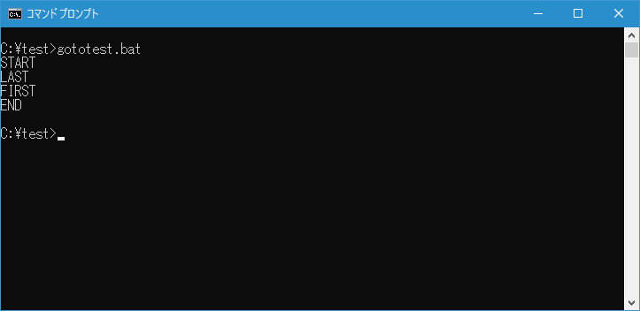
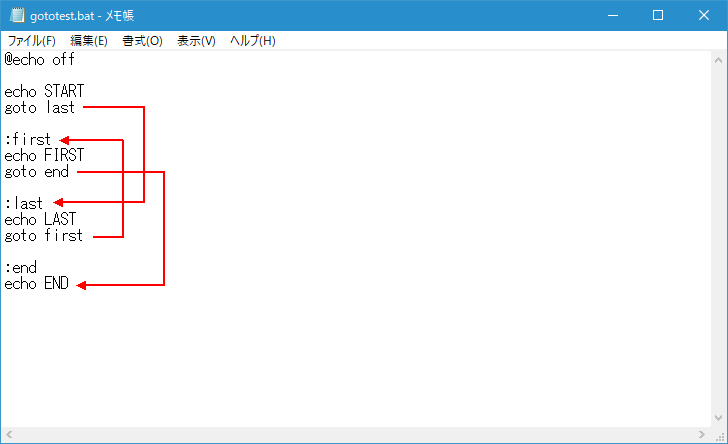
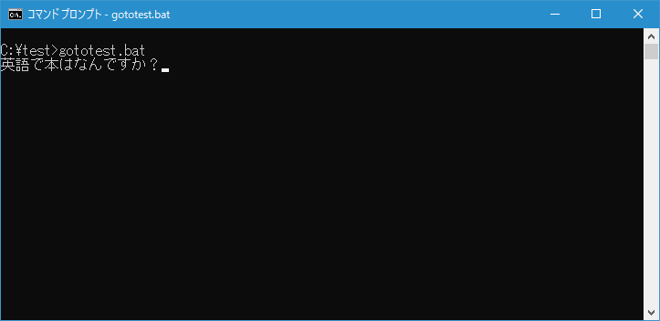
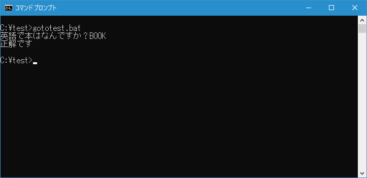
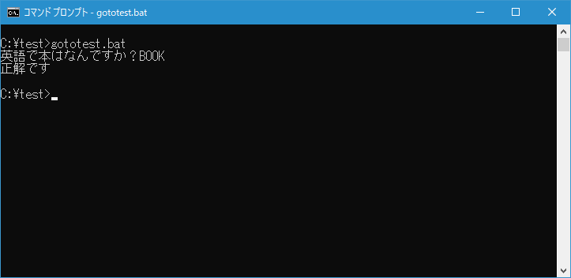

ラベルの位置へ制御を移す(GOTO)
指定したラベルの位置へ制御を移すことができる GOTO コマンドの使い方について解説します。
GOTOコマンドの使い方
GOGO コマンドを使用すると指定したラベルの位置へ制御を移すことができます。書式は次の通りです。
GOTO ラベル
GOTO コマンド実行されると引数に指定したラベルの位置へ制御が移ります。ラベルはバッチファイル内の任意の場所に次のように記述することができます。ラベルの行には他には何も記述することはできません。
:ラベル名
指定したラベルへ制御を移動する
テストを行うために次のような簡単なバッチファイル gototest.bat を c:\test に作成しました。
@echo off
echo START
goto last
:first
echo FIRST
goto end
:last
echo LAST
goto first
:end
echo END
バッチファイルを実行すると最初に START が表示されたあと last ラベルへ移動します。次に LAST が表示されたあと今度は first ラベルへ移動します。そして FIRST を表示したあと end ラベルへ移動して END を表示してバッチファイルが終了します。

このようにラベルを使った制御の移動は、バッチファイの後の方へも前の方にも移動することができます。

-- --
今度は IF コマンドと組み合わせた使い方です。テストを行うために次のような簡単なバッチファイル gototest.bat を c:\test に作成しました。
@echo off
set answer=
set /p answer=英語で本はなんですか？
if %answer%==BOOK (
echo 正解です
goto end
)
echo 不正解です
:end
バッチファイルを実行すると質問が表示され入力待ちとなります。

正解を回答すると IF コマンドで指定したコマンドが実行されますが、そのあと GOTO コマンドによって end ラベルへ制御が移りバッチファイルが終了となります。

あらかじめ作成済のEOFラベルを使う
バッチファイル内で記述しなくても使用できるラベルとして EOF ラベルが用意されています。EOF ラベルはバッチファイルの一番最後を表し、GOTO コマンドの引数として :EOF を指定するとバッチファイルの最後に移動しバッチファイルが終了します。引数に指定する時は EOF ではなく :EOF と指定する点に注意してください。
EOF ラベルを使って先ほどのサンプルを書き換えると次のようになります。
@echo off
set answer=
set /p answer=英語で本はなんですか？
if %answer%==BOOK (
echo 正解です
goto :EOF
)
echo 不正解です
バッチファイルを実行すると質問が表示され入力待ちとなります。
正解を回答すると IF コマンドで指定したコマンドが実行されますが、そのあと GOTO コマンドによって EOF ラベルへ制御が移りバッチファイルが終了となります。

このように EOF ラベルを使用すると、ラベルを記述しなくてもどこからでもバッチファイルの最後へ制御を移すことができます。
-- --
GOTO コマンドをラベルの位置へ制御を移す方法について解説しました。
( Written by Tatsuo Ikura )

著者 / TATSUO IKURA
初心者～中級者の方を対象としたプログラミング方法や開発環境の構築の解説を行うサイトの運営を行っています。